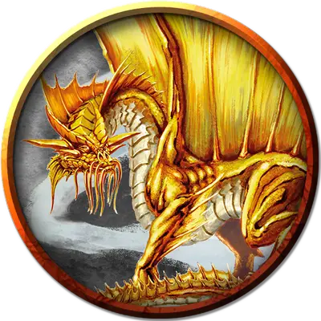

Взрослый золотой дракон
Adult Gold Dragon
Огромный Дракон, законно-добрый

Класс Доспеха 19 (природный доспех)
Хиты 256 (19к12 + 133)
Скорость 40 футов, плавая 40 футов, летая 80 футов
| мод | спас | ||
|---|---|---|---|
| СИЛ | 27 | +8 | +8 |
| ЛОВ | 14 | +2 | +8 |
| ТЕЛ | 25 | +7 | +13 |
| мод | спас | ||
|---|---|---|---|
| ИНТ | 16 | +3 | +3 |
| МДР | 15 | +2 | +8 |
| ХАР | 24 | +7 | +13 |
Навыки Восприятие +14, Проницательность +8, Скрытность +8, Убеждение +13
Иммунитет к урону огонь
Чувства слепое зрение 60 футов, тёмное зрение 120 футов, пассивное Восприятие 24
Языки Общий, Драконий
Опасность 17 (18000 опыта)
Бонус мастерства +6
Среда обитания Лес, Луг
Особенности
Амфибия. Дракон может дышать и воздухом и под водой.
Легендарное сопротивление (3/день). Если дракон проваливает спасбросок, он может вместо этого сделать спасбросок успешным.
Действия
Мультиатака. Дракон может использовать Ужасающее присутствие. Затем он совершает три атаки: одну укусом, и две когтями.
Укус. Рукопашная атака оружием: +14 к попаданию, досягаемость 10 футов, одна цель. Попадание: Колющий урон 19 (2к10 + 8).
Коготь. Рукопашная атака оружием: +14 к попаданию, досягаемость 5 футов, одна цель. Попадание: Рубящий урон 15 (2к6 + 8).
Хвост. Рукопашная атака оружием: +14 к попаданию, досягаемость 15 футов, одна цель. Попадание: Дробящий урон 17 (2к8 + 8).
Ужасающее присутствие. Все существа на выбор дракона, находящиеся в пределах 120 футов от него и знающие о его присутствии, должны преуспеть в спасброске Мудрости Сл 21, иначе станут испуганными на 1 минуту. Существо может повторять этот спасбросок в конце каждого своего хода, оканчивая эффект на себе при успехе. Если спасбросок существа был успешным, или эффект на нём окончился, оно получает иммунитет к Ужасающему присутствию этого дракона на следующие 24 часа.
Оружия дыхания (перезарядка 5–6). Дракон использует один из следующих видов оружия дыхания.
• Огненное дыхание. Дракон выдыхает огонь 60-футовым конусом. Все существа в этой области должны совершить спасбросок Ловкости Сл 21, получая урон огнём 66 (12к10) при провале, или половину этого урона при успехе.
• Ослабляющее дыхание. Дракон выдыхает газ 60-футовым конусом. Все существа в этой области должны преуспеть в спасброске Силы Сл 21, иначе в течение 1 минуты будут совершать с помехой броски атаки, основанные на Силе, проверки Силы и спасброски Силы. Существо может повторять этот спасбросок в конце каждого своего хода, оканчивая эффект на себе при успехе.
Смена формы. Дракон магическим образом превращается в гуманоида или зверя, чей показатель опасности не превышает его собственный, или принимает свой истинный облик. Он принимает свой истинный облик, если умирает. Всё снаряжение, которое он несёт или носит, сливается с новым обликом или используется им (на выбор дракона).
В новом облике дракон сохраняет мировоззрение, хиты, Кости Хитов, способность говорить, владения, Легендарные действия, действия логова, значения Интеллекта, Мудрости и Харизмы, а также действия. Все остальные характеристики и умения заменяются характеристиками и умениями нового облика, за исключением классовых умений и легендарных действий нового облика.
Легендарные действия
Дракон может совершить 3 легендарных действия, выбирая из представленных ниже вариантов. За один раз можно использовать только одно легендарное действие, и только в конце хода другого существа. Дракон восстанавливает использованные легендарные действия в начале своего хода.
Обнаружение. Дракон совершает проверку Мудрости (Восприятие).
Атака хвостом. Дракон совершает атаку хвостом.
Атака крыльями (стоит 2 действия). Дракон бьёт своими крыльями. Все существа в пределах 10 футов от дракона должны преуспеть в спасброске Ловкости Сл 22, иначе получат дробящий урон 15 (2к6 + 8) и будут сбиты с ног. После этого дракон может пролететь на расстояние, не превышающее половину скорости полёта.
Логово
Золотые драконы располагают свои логова в захолустных местах, где они могут расположиться как им захочется, не вызывая подозрений или страха. Большинство обитает вблизи идиллических рек и озёр, на островах, окутанных туманом, в пещерных комплексах, скрытых за игристыми водопадами или в древних руинах.
Действия логова
При значении инициативы «20» (в случае ничьей проигрывает всем конкурентам) дракон совершает действие логова, чтобы вызвать один из следующих эффектов; дракон не может воспользоваться одним и тем же эффектом два раунда подряд:
• Дракон заглядывает в будущее, поэтому совершает с преимуществом броски атаки, проверки характеристик и спасброски до показателя инициативы «20» в следующем раунде.
• Одно существо, которое дракон видит в пределах 120 футов, должно преуспеть в спасброске Харизмы Сл 15, иначе будет изгнано на план снов, иной план существования, который дракон вообразил в реальность. Для того чтобы сбежать, существо должно действием совершить состязание своей проверки Харизмы с проверкой дракона. Если существо победит, оно вырывается из плана снов. В противном случае эффект заканчивается при показателе инициативы «20» в следующем раунде. Когда эффект заканчивается, существо появляется в том месте, откуда пропало, либо в ближайшем свободном пространстве, если первоначальное место занято.
Местные эффекты
Регион, в котором есть логово легендарного золотого дракона, искажается драконьей магией, которая создаёт один или несколько следующих эффектов:
• Каждый раз, когда существо, способное понимать какой-нибудь язык, засыпает или входит в состояние транса или забытья в пределах 6 миль от логова дракона, дракон может установить телепатический контакт с этим существом и говорить с ним в его снах. Существо помнит разговор с драконом после пробуждения.
• Скопления красивого, переливающегося тумана проявляются в пределах 6 миль от логова дракона. Туман ничего не скрывает. Он принимает жуткие формы, когда злые создания находятся рядом с драконом или другими незлыми существами в тумане, предупреждая таких существ об опасности.
• Драгоценные камни и жемчужины в пределах 1 мили от драконьего логова искрятся и блестят, испуская тусклый свет в радиусе 5 футов
Если дракон умирает, эти эффекты немедленно завершаются.
Опциональные правила
Драконы и врождённое колдовство. Драконы обладают врождёнными способностями к колдовству, и могут с возрастом осваивать новые заклинания при использовании этого опционального правила.
Молодые и более старые драконы могут накладывать количество заклинаний, равное их модификатору Харизмы. Каждое заклинание может быть наложено лишь один раз за день, не требуя материальных компонентов, и уровень заклинания не может превышать трети показателя опасности дракона (округляя в меньшую сторону).
Бонус к попаданию атак заклинаниями дракона равен его бонусу мастерства + его бонус Харизмы. Сл спасбросков от заклинаний дракона равна 8 + его бонус мастерства + его модификатор Харизмы. (Monster Manual)
Драконы и врождённое колдовство. Этот дракон от природы может накладывать семь заклинаний, 1/день каждое, и ему не требуются для этого материальные компоненты. Уровень каждого заклинания не может быть выше 5-го. Заклинание дракона, имеют Сл спасброска 21, и он имеет +13 к попаданию атаками заклинаниями.
Ниже приведен список предлагаемых заклинаний, но вы также можете выбрать заклинания, отражающие характер дракона. Дракон, который от природы накладывает заклинания друидов, ведёт себя иначе, чем тот, кто накладывает заклинания колдуна. Вы также можете дать дракону заклинания более высокого уровня, чем позволяет это правило, но такая настройка может повысить ПО дракона — особенно если эти заклинания наносят урон или накладывают состояния на цели.
• Благословение [bless];
• Общение [commune];
• Лечение ран [cure wounds];
• Обет [geas];
• Замедление [slow];
• Внушение [suggestion];
• Область истины [zone of truth]. (Fizban's Treasury of Dragons)
Персонализация дракона. Как уже говорилось в «Руководстве Мастера», вы можете настроить блок статистики любого дракона, чтобы отразить его уникальный характер. Незначительные изменения, такие как приведенные ниже, легко сделать, и они не влияют на ПО дракона. (Fizban's Treasury of Dragons)
Языки. Большинство драконов предпочитают говорить на Драконьем, но для общения с союзниками и приспешниками изучают Общий. Но, учитывая высокий Интеллект и продолжительный срок жизни, драконы могут легко выучить дополнительные языки. Вы можете добавить языки в блок статистики дракона.
Навыки. Большинство драконов владеют навыками Восприятие и Скрытность, а многие драконы владеют дополнительными навыками. Как и в случае с языками, вы можете изменить список навыков дракона (даже удвоить бонус мастерства), чтобы отразить его интересы и занятия. Вы также можете наделить дракона владениями инструментами, особенно если дракон проводит время в гуманоидной форме.
Заклинания. Опциональное правило «Бестиария» о том, чтобы сделать драконов с врожденным колдовством, — это простой способ добавить драконам разнообразия, не влияя на их ПО. В Главе 5 «Дракономикон» предлагаются списки заклинаний для разных видов драконов, но вы также можете выбрать заклинания, отражающие характер дракона. Дракон, который от природы накладывает заклинания друидов, ведёт себя иначе, чем тот, кто накладывает заклинания колдуна. Вы также можете дать дракону заклинания более высокого уровня, чем позволяет это правило, но такая настройка может повысить ПО дракона — особенно если эти заклинания наносят урон или накладывают состояния на цели.
Другие черты и действия. Вы можете заимствовать черты и действия у других монстров, чтобы придать дракону уникальную изюминку. Рассмотрим эти примеры:
Изменение формы. Вы можете решить, что дракон приобретает это действие в более раннем возрасте, чем обычно, особенно если вы хотите представить в своей кампании дракона в гуманоидной форме. (См. металлические драконы).
Поглощение урона. Вы можете решить, что красный или золотой дракон не только не получает урон от огня, но и исцеляется от него. (См. мясной голем [flesh golem]).
Облёт. Дракон - проворный летун, быстро вылетающий из зоны досягаемости врагов. (См. перитон [peryton]).
Подражание. Изображение персонажей или их союзников может стать забавным трюком для хитрого дракона. (См. кенку [kenku]).
Омоложение. Вы можете решить, что драконы в вашей кампании, будучи неотъемлемой частью Материального плана, почти невозможно уничтожить. Жизненная сущность дракона может храниться в яйце, из которого он появился на свет, в его кладе или в пещерном зале в центре мира, так же как сущность лича спрятана в филактерии. (См. лич [lich]).
Особые чувства. У большинства драконов есть слепое зрение и темное зрение. Вы можете улучшить зрение до истинного зрения или наделить дракона скоростью рытья или чувством вибрации. (См. зрение и свет).
Прокладывание туннеля. Эта особенность может быть присуща любому дракону, обладающему скоростью копания - он может двигаться сквозь твёрдую породу, оставляя за собой туннель. (См. бурый увалень [umber hulk]).
Описание
Самые могущественные и величественные из металлических драконов, золотые драконы являются убеждёнными противниками зла.
На лице золотого дракона, окружённом гибкими шипами, напоминающими усы, всегда проницательное выражение. Его рога направлены назад, от его носа и лба, а за ними идёт двойной гребень, украшающий длинную драконью шею. Парусообразные крылья золотого дракона начинаются от плеч и идут вплоть до кончика хвоста, позволяя ему летать с характерным волнистым движением, как будто плавая по воздуху. Чешуя вирмлинга золотого дракона темно-жёлтая с металлическими пятнами. Эти пятна растут в размерах, пока дракон взрослеет. У взрослого золотого дракона зрачки исчезают и глаза становятся похожи на лужи расплавленного золота.
Поедание богатств. Золотые драконы могут питаться чем угодно, но предпочитают рацион, состоящий из жемчуга и драгоценных камней. К счастью, золотой дракон не обязан насыщать себя только таким богатством, чтобы почувствовать себя удовлетворённым. Сокровища в дар, которые могут быть съедены, хорошо воспринимаются золотым драконом, если он не воспринимает их как взятку.
Сдержанные перевёртыши. Золотые драконы уважают других металлических драконов за их мудрость и справедливость, но они являются самыми мрачными и отчуждёнными из добрых драконов. Они настолько ценят свою личную жизнь, что редко тесно общаются с другими драконами, исключая своих супругов и потомство.
Старые золотые драконы могут принимать обличья гуманоидов или животных. Редко происходит так, что золотой дракон в маскировке раскрывает свою истинную форму. Под видом разносчика он может регулярно посещать город, чтобы послушать местные слухи, поддержать честных предпринимателей и протянуть невидимую руку помощи. В облике животного дракон может подружиться с потерявшимся ребёнком, бродячим менестрелем или трактирщиком, выступая в качестве спутника несколько дней или недель подряд.
Мастер накопительства. Золотой дракон копит свои сокровища в хорошо защищённом хранилище глубоко в логове. Волшебная защита, размещающаяся в логове, сделают практически невозможной любую попытку взять что-либо из сокровищ без ведома дракона.
См. дополнительно статью: "Бестиарий: Драконы"